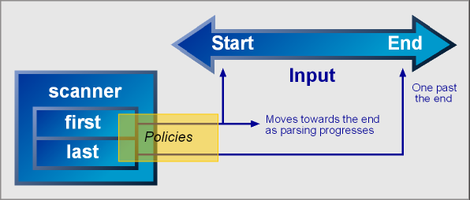

| 扫描器与解析 |
 |
 |
 |
扫描器的任务是把顺序输入数据流喂给解析器. 扫描器从输入中提取数据, 分块, 可能进行修改或过滤, 最后按需把结果交给各个解析器元素, 直至输入耗尽. 扫描器由两个符合 STL 规范的前向迭代器 first 与 last 组成, 其中 first 以引用方式持有, last 以值方式持有. first 以引用持有是为了允许重新定位. 下图展示了正在发生的事情:
 |
扫描器通过一组策略管理解析过程的各个方面. 有三组策略分别支配:
迭代与过滤
这些策略大多隐藏在幕后, 使用者通常无需了解它们. 不过, 高级用户可以提供自己的策略来覆盖已有策略, 从而微调解析过程以适应自身需要. 我们将看到如何做到这一点. 稍后会进一步详述.
scanner 是一个期望两个参数的模板类: IteratorT, 迭代器类型; 以及 PoliciesT, 其策略集. IteratorT 默认为 char const*, 而 PoliciesT 默认为 scanner_policies<>, 一套可以开箱即用的预定义扫描器策略.
template<
typename IteratorT = char const*,
typename PoliciesT = scanner_policies<> >
class scanner;Spirit 使用与 C++ 标准模板库(STL)正式定义的相同的迭代器概念与接口. 我们可以原样使用 STL 容器(如 list, vector, string 等)提供的迭代器, 或者也可以编写自己的迭代器. 迭代器可以简单如一个指针(如 char const*). 在光谱的另一端, 迭代器也可以相当复杂; 例如, 包装词法分析器(如 LEX)的迭代器适配器.
框架提供了几个自由函数, 让解析变得轻而易举. 这些解析函数有两种形式. 第一种形式作用于字符层面. 第二种作用于短语层面, 并要求提供一个 跳过解析器.
跳过解析器几乎可以是任何解析器原语或组合器. 其目的是通过跳过空白把扫描器的 first 迭代器移到有效记号上. 例如在 C 中, 制表符 '\t', 换行符 '\n', 回车 '\r', 空格 ' ' 以及注释 /*...*/ 内的字符都被视为空白.
字符层面解析
template <typename IteratorT, typename DerivedT>
parse_info<IteratorT>
parse
(
IteratorT const& first,
IteratorT const& last,
parser<DerivedT> const& p
); template <typename CharT, typename DerivedT>
parse_info<CharT const*>
parse
(
CharT const* str,
parser<DerivedT> const& p
);有两个变体. 第一个变体接受一个 first, last 迭代器对, 就像使用 STL 算法那样. 第二个变体接受一个以空字符结尾的字符串. 最后一个实参是解析器 p, 它将用于解析输入.
短语层面解析
template <typename IteratorT, typename ParserT, typename SkipT>
parse_info<IteratorT>
parse
(
IteratorT const& first,
IteratorT const& last,
parser<ParserT> const& p,
parser<SkipT> const& skip
); template <typename CharT, typename ParserT, typename SkipT>
parse_info<CharT const*>
parse
(
CharT const* str,
parser<ParserT> const& p,
parser<SkipT> const& skip
);与上面一样, 有两个变体. 第一个变体接受一个 first, last 迭代器对, 就像使用 STL 算法那样. 第二个变体接受一个以空字符结尾的字符串. 实参 p 是将用于解析输入的解析器. 最后一个实参 skip 是跳过解析器.
parse_info 结构体
上面的函数返回一个以传入的迭代器类型参数化的 parse_info 结构体. parse_info 结构体有这些成员:
| parse_info | |
| stop | 指向最终解析位置(即解析器识别并处理输入到此处) |
| hit | 解析成功时为 true. 这可以是完全的: 解析器消耗了全部输入; 也可以是部分的: 解析器只消耗了输入的一部分. |
| full | 当我们获得完全匹配时为 true(即解析器消耗了全部输入). |
| length | 解析器消耗的字符数. 仅当我们有成功匹配(部分或完全)时该值才有效. |
为方便起见, Spirit 声明了这些 typedef:
typedef scanner<char const*, unspecified> phrase_scanner_t;
typedef scanner<wchar_t const*, unspecified> wide_phrase_scanner_t;
这些正是 Spirit 在对 parse 函数的调用中, 以 char const*(C 字符串)或 wchar_t const*(宽字符串)作为第一个实参, 并以 space_p 作为跳过解析器(第三个参数)时所使用的扫描器类型. 例如, 我们可以用这些 typedef 声明一些规则. 示例:
rule<phrase_scanner_t> my_rule; parse("abrakadabra", my_rule, space_p);
自由 parse 函数让我们省心. 使用它们, 我们无需理会扫描器的复杂细节. 自由 parse 函数把肮脏的细节藏了起来. 然而, 将来的某个时候, 我们会需要深入底层. 好在当这种需要来临时, 我们知道自己面对的是什么. 我们将需要深入低层, 直接调用解析器的 parse 成员函数.
如果我们希望在字符层面工作, 步骤相当简单:
scanner<IteratorT> scan(first, last); if (p.parse(scan)) { // Parsed successfully. If first == last, then we have // a full parse, the parser recognized the input in whole. } else { // Parsing failure. The parser failed to recognize the input }
成功匹配时, 输入相应地向前推进. 但不成功匹配时会怎样? 要当心. 直觉上也许会认为扫描器位置会被重置到解析之前的初始位置. 不, 位置不会重置. 不成功匹配时, 扫描器的位置是 未定义的! 通常, 它位于递归下降中某处发现错误的最远点. 若不希望这种行为, 你可能需要自己摆放扫描器位置. numerics 一章中的示例展示了如何保存并随后恢复扫描器位置. |
其中 p 是我们想要使用的解析器, first/last 是指向输入的迭代器对. 我们只需根据迭代器创建一个扫描器. 我们在此将使用的扫描器类型使用默认的 scanner_policies<>.
当我们希望在短语层面工作时, 情况要复杂一些:
typedef skip_parser_iteration_policy<SkipT> iter_policy_t; typedef scanner_policies<iter_policy_t> scanner_policies_t; typedef scanner<IteratorT, scanner_policies_t> scanner_t; iter_policy_t iter_policy(skip); scanner_policies_t policies(iter_policy); scanner_t scan(first, last, policies); if (p.parse(scan)) { // Parsed successfully. If first == last, then we have // a full parse, the parser recognized the input in whole. } else { // Parsing failure. The parser failed to recognize the input }
其中 SkipT 是跳过解析器 skip 的类型. 同样, p 是我们想要使用的解析器, first/last 是指向输入的迭代器对. 给定跳过解析器类型 SkipT, skip_parser_iteration_policy 会创建一个扫描器迭代策略, 它跳过被跳过解析器识别的部分. 随后可以用它来创建扫描器. scanner_policies 类包装所有与扫描器相关的策略, 包括迭代策略.
从短语层面解析切换到字符层面解析时, lexeme_d(见 directives.html)通过禁用空白跳过来施展魔法. 这是通过调整 扫描器实现的. 然而, 这样做之后, lexeme 内的所有解析器都会得到一个变换后的扫描器类型. 在大多数情况下这不应成为问题. 然而, 当在 lexeme_d 内部调用规则时, 若规则不具有正确的扫描器类型, 编译器会卡住. 若必须在 lexeme_d 内使用规则, 则规则的类型必须是:
rule<lexeme_scanner<ScannerT>::type> r;
其中 ScannerT 是所用扫描器的实际类型. 注意, lexeme_scanner 只对短语层面的扫描器有效.
类似地, as_lower_d 通过过滤并把从扫描器接收的所有字符转换为小写来完成其工作. 这同样是通过调整 扫描器实现的. 于是, as_lower_d 内部的所有解析器同样会得到一个变换后的扫描器类型. 若必须在 as_lower_d 内使用规则, 则规则的类型必须是:
rule<as_lower_scanner<ScannerT>::type> r;
其中 ScannerT 是所用扫描器的实际类型.
同样, no_actions_d 指令调整扫描器以禁用语义动作的触发. 与之前一样, no_actions_d 内部的所有解析器都会得到一个变换后的扫描器类型. 若必须在 no_actions_d 内使用规则, 则规则的类型必须是:
rule<no_actions_scanner<ScannerT>::type> r;
其中 ScannerT 是所用扫描器的实际类型.
 见 no_actions.cpp. 它是 Spirit 发行包的一部分.
见 no_actions.cpp. 它是 Spirit 发行包的一部分.
|
|
|
Copyright © 1998-2003 Joel de Guzman
使用、修改与分发受 Boost 软件许可 1.0 版(Boost Software License, Version 1.0)约束. (随附文件 LICENSE_1_0.txt 或复制于 http://www.boost.org/LICENSE_1_0.txt)